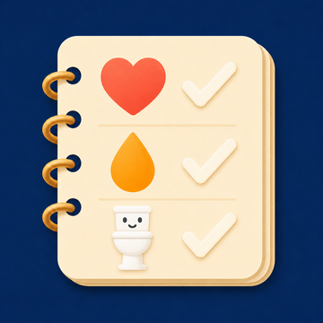
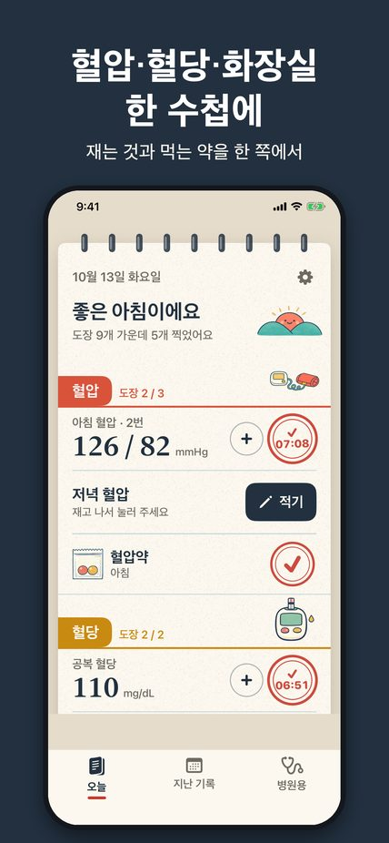
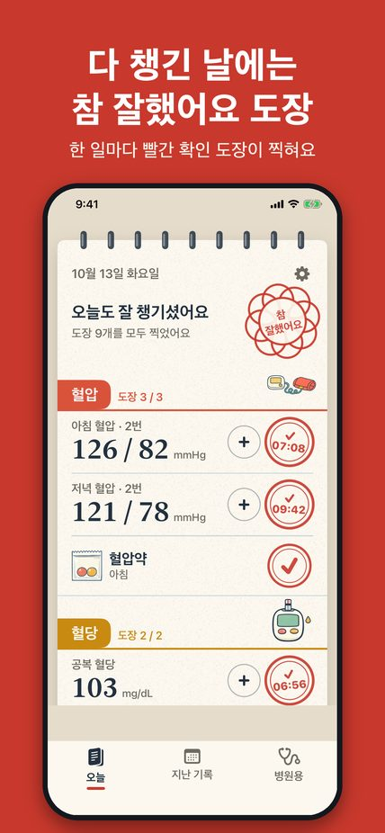
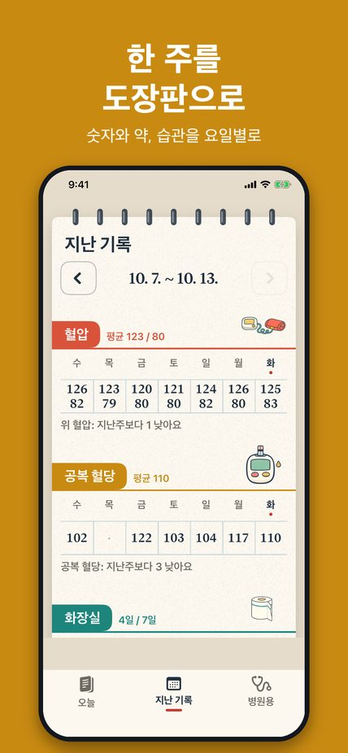

혈압, 혈당, 화장실을 한 수첩에
Blood pressure, blood sugar and bowel movements in one notebook



병원에서 나눠 주는 종이 수첩처럼, 날마다 재는 것과 먹는 약을 한 쪽에 적습니다. 한 일에는 빨간 확인 도장이 찍히고, 하루치를 다 채우면 참 잘했어요 도장이 찍힙니다. 큰 글씨와 큰 버튼으로 어르신도 쓰기 쉽게 만들었습니다.
이 앱은 혈압이나 혈당을 재지 않으며, 의료 기기가 아니고 진단하거나 치료를 권하지 않습니다. 기록은 기기 안에만 저장됩니다.
Like the paper booklet a clinic hands out, Carestamp keeps your daily readings and medicine on one page. Every finished task gets a red confirmation stamp, and a full day earns a Well done stamp. Large print and large buttons make it easy for older adults.
The app does not measure blood pressure or blood sugar. It is not a medical device and does not diagnose or recommend treatment. Records are stored only on your device.